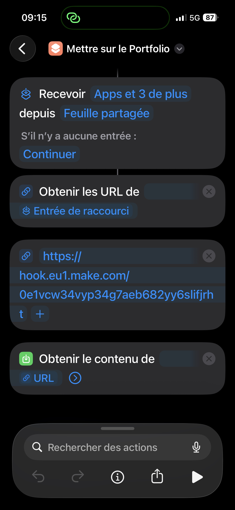
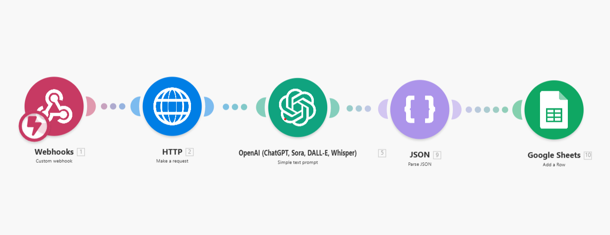
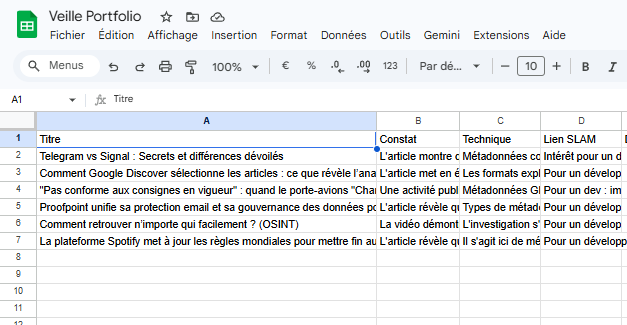

Veille Technologique : Automatisation & IA
Optimisation du flux d'informations et partage automatisé
Résumé du projet
Pour structurer ma veille technologique, j'ai mis en place un système automatisé permettant de centraliser, traiter et diffuser des articles pertinents.
L'objectif est de transformer une simple lecture sur smartphone en une publication synthétisée sur mon portfolio, réduisant ainsi le temps de traitement manuel tout en exploitant la puissance de l'IA.
Outils principaux : Make, ChatGPT, iOS Shortcuts & Google Sheets.
1. Capture & Déclenchement (iOS)
À partir d'outils comme Syft ou Google Alerts, je sélectionne les articles. Grâce à un Raccourci iOS personnalisé, je partage l'URL directement vers un Webhook Make. Cela me permet de filtrer ma veille "à la volée" depuis n'importe quel endroit.


2. Scraping & Analyse par IA
Le scénario Make récupère le contenu brut de l'article (Scraping). Ce contenu est envoyé via API à ChatGPT avec un prompt spécifique pour générer une synthèse structurée, extraire les points clés et définir une catégorie technologique.
3. Stockage & Publication
La synthèse et les métadonnées sont stockées dans un Google Sheets. Ce dernier sert de base de données : mon portfolio récupère ces lignes en temps réel pour afficher les derniers articles de veille sans aucune intervention manuelle supplémentaire.

Compétences mobilisées (Référentiel BTS SIO)
Automatisation d'un système de veille technologique (Make, IA, API)
Compétences : Organiser son développement professionnel | Gérer le patrimoine informatique.
Preuve OneNoteTableau de Synthèse E5
Retrouvez ce projet et les autres compétences validées dans mon tableau récapitulatif.
Voir le Tableau complet